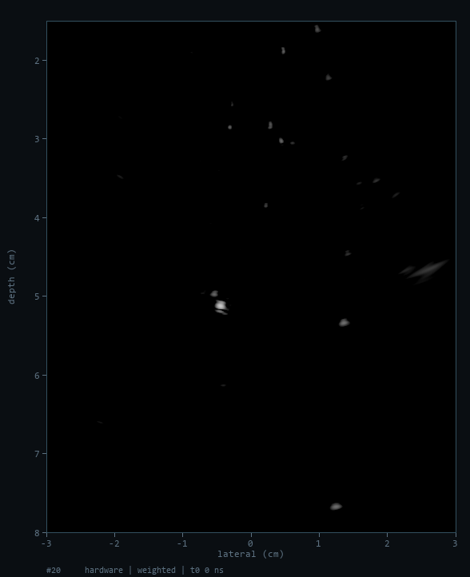
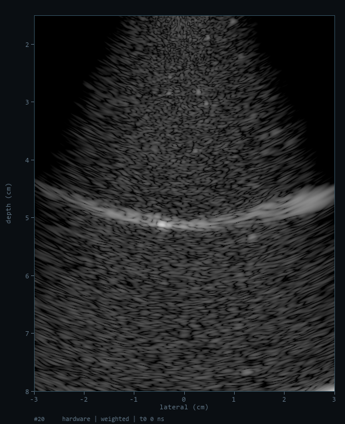
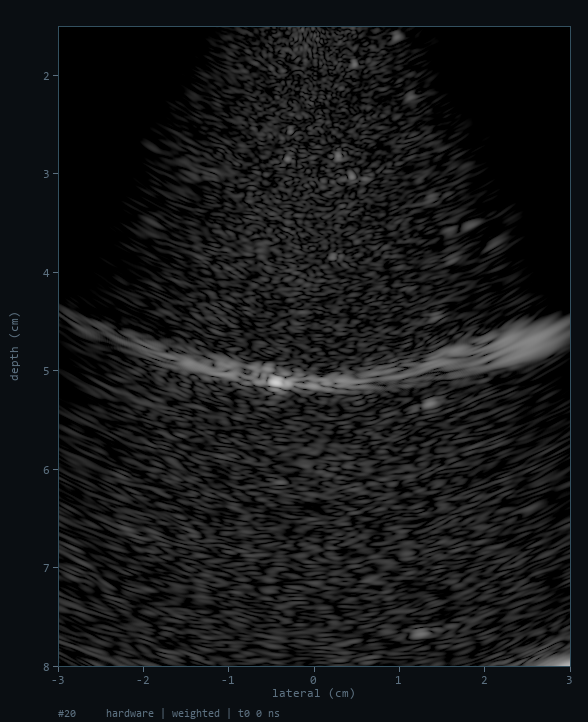
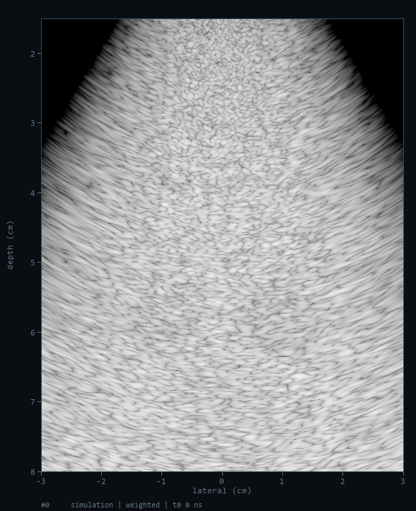
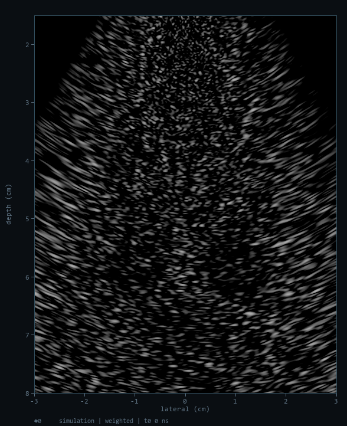

Replay results, not new physical measurements. 79 reconstructions from earlier wire-bath RF. The current FPGA did not return the checked runtime identity. Live captures remain pending the programming connection. No tissue has been validated.
The faint target near (+13.5 mm, 53.4 mm) was retained with gentle processing. The second weak region was unstable and was excluded from target validation. Gray background in water may be noise, sidelobes or reverberation; it is not evidence of tissue sensitivity.

Full settings
Full settings
Full settingsAll three panels use the same original RF frame, 70 dB range, +40 dB gain and linear gray curve. Aperture taper and sweep averaging differ as recorded. These panels deliberately show the tradeoff: more gray also exposes more clutter.
Complete machine-readable results · Interpretation and limits
A deterministic 2-D linear-scattering model tests how the actual renderer treats diffuse RF. It does not model the probe or validate tissue performance.


| Trial | Frame | Faint target peak, raw beamformer units | Peak/local background, dB | Artifacts |
|---|---|---|---|---|
| candidate-a0.5-cf0 | 20 | 18.815 | 11.90 | Image · Settings |
| candidate-a0.5-cf0.1 | 20 | 18.309 | 15.35 | Image · Settings |
| candidate-a0.5-cf0.2 | 20 | 17.818 | 18.57 | Image · Settings |
| candidate-a0.75-cf0 | 20 | 14.951 | 10.49 | Image · Settings |
| candidate-a0.75-cf0.1 | 20 | 14.589 | 13.63 | Image · Settings |
| candidate-a0.75-cf0.2 | 20 | 14.237 | 16.56 | Image · Settings |
| candidate-a1-cf0 | 20 | 10.597 | 8.92 | Image · Settings |
| candidate-a1-cf0.1 | 20 | 10.317 | 11.76 | Image · Settings |
| candidate-a1-cf0.2 | 20 | 10.079 | 14.75 | Image · Settings |
| candidate-held-f12-a0.75 | 12 | 13.747 | 12.37 | Image · Settings |
| candidate-held-f12-a1 | 12 | 9.570 | 10.72 | Image · Settings |
| candidate-held-f28-a0.75 | 28 | 12.940 | 11.99 | Image · Settings |
| candidate-held-f28-a1 | 28 | 9.090 | 10.47 | Image · Settings |
| candidate-held-f4-a0.75 | 4 | 14.540 | 13.20 | Image · Settings |
| candidate-held-f4-a1 | 4 | 10.146 | 11.56 | Image · Settings |
| display-dyn60 | 20 | 14.589 | 13.63 | Image · Settings |
| display-dyn65 | 20 | 14.589 | 13.63 | Image · Settings |
| display-dyn70 | 20 | 14.589 | 13.63 | Image · Settings |
| display-dyn75 | 20 | 14.589 | 13.63 | Image · Settings |
| display-dyn80 | 20 | 14.589 | 13.63 | Image · Settings |
| held-f12-cf0 | 12 | 10.435 | 8.22 | Image · Settings |
| held-f12-cf0.1 | 12 | 10.062 | 10.91 | Image · Settings |
| held-f12-cf0.2 | 12 | 9.703 | 13.42 | Image · Settings |
| held-f12-cf0.35 | 12 | 9.188 | 16.94 | Image · Settings |
| held-f12-cf2 | 12 | 5.043 | 46.95 | Image · Settings |
| held-f28-cf0 | 28 | 10.480 | 8.50 | Image · Settings |
| held-f28-cf0.1 | 28 | 10.141 | 11.17 | Image · Settings |
| held-f28-cf0.2 | 28 | 9.814 | 13.67 | Image · Settings |
| held-f28-cf0.35 | 28 | 9.343 | 17.18 | Image · Settings |
| held-f28-cf2 | 28 | 5.436 | 47.81 | Image · Settings |
| held-f4-cf0 | 4 | 10.379 | 8.50 | Image · Settings |
| held-f4-cf0.1 | 4 | 10.048 | 11.31 | Image · Settings |
| held-f4-cf0.2 | 4 | 9.728 | 13.94 | Image · Settings |
| held-f4-cf0.35 | 4 | 9.266 | 17.62 | Image · Settings |
| held-f4-cf2 | 4 | 5.431 | 47.72 | Image · Settings |
| saved-rf-apod-0p5 | 20 | 19.183 | 11.31 | Image · Settings |
| saved-rf-apod-0p75 | 20 | 15.190 | 9.97 | Image · Settings |
| saved-rf-avg-2 | 20 | 10.597 | 8.92 | Image · Settings |
| saved-rf-avg-4 | 20 | 10.385 | 8.71 | Image · Settings |
| saved-rf-avg-8 | 20 | 9.375 | 7.92 | Image · Settings |
| saved-rf-band-1p5-6p5 | 20 | 10.517 | 8.11 | Image · Settings |
| saved-rf-band-2-4 | 20 | 7.322 | 9.31 | Image · Settings |
| saved-rf-band-2-6 | 20 | 10.248 | 8.05 | Image · Settings |
| saved-rf-band-2p5-5 | 20 | 10.734 | 8.70 | Image · Settings |
| saved-rf-band-3-5 | 20 | 10.009 | 8.14 | Image · Settings |
| saved-rf-band-3-6 | 20 | 9.779 | 7.58 | Image · Settings |
| saved-rf-cf0 | 20 | 10.805 | 8.74 | Image · Settings |
| saved-rf-cf0.1 | 20 | 10.411 | 11.45 | Image · Settings |
| saved-rf-cf0.2 | 20 | 10.031 | 13.99 | Image · Settings |
| saved-rf-cf0.35 | 20 | 9.488 | 17.59 | Image · Settings |
| saved-rf-cf0.5 | 20 | 8.974 | 20.98 | Image · Settings |
| saved-rf-cf1 | 20 | 7.453 | 31.45 | Image · Settings |
| saved-rf-cf2 | 20 | 5.252 | 49.93 | Image · Settings |
| saved-rf-comp | 20 | 8.231 | 6.26 | Image · Settings |
| saved-rf-matched | 20 | 6.041 | 8.92 | Image · Settings |
| validation-validation-flat-a-f12-gentle | 12 | 13.710 | 11.80 | Image · Settings |
| validation-validation-flat-a-f12-reference | 12 | 15.623 | 9.43 | Image · Settings |
| validation-validation-flat-a-f12-wire | 12 | 6.382 | 38.43 | Image · Settings |
| validation-validation-flat-a-f20-gentle | 20 | 12.526 | 11.23 | Image · Settings |
| validation-validation-flat-a-f20-reference | 20 | 13.534 | 8.35 | Image · Settings |
| validation-validation-flat-a-f20-wire | 20 | 5.995 | 37.44 | Image · Settings |
| validation-validation-flat-a-f28-gentle | 28 | 12.938 | 11.69 | Image · Settings |
| validation-validation-flat-a-f28-reference | 28 | 15.158 | 9.65 | Image · Settings |
| validation-validation-flat-a-f28-wire | 28 | 6.545 | 43.95 | Image · Settings |
| validation-validation-flat-a-f4-gentle | 4 | 13.885 | 11.96 | Image · Settings |
| validation-validation-flat-a-f4-reference | 4 | 13.601 | 8.38 | Image · Settings |
| validation-validation-flat-a-f4-wire | 4 | 6.525 | 44.91 | Image · Settings |
| validation-validation-flat-b-f12-gentle | 12 | 13.747 | 12.37 | Image · Settings |
| validation-validation-flat-b-f12-reference | 12 | 14.822 | 9.51 | Image · Settings |
| validation-validation-flat-b-f12-wire | 12 | 7.708 | 52.60 | Image · Settings |
| validation-validation-flat-b-f20-gentle | 20 | 14.589 | 13.63 | Image · Settings |
| validation-validation-flat-b-f20-reference | 20 | 15.190 | 9.97 | Image · Settings |
| validation-validation-flat-b-f20-wire | 20 | 7.760 | 54.35 | Image · Settings |
| validation-validation-flat-b-f28-gentle | 28 | 12.940 | 11.99 | Image · Settings |
| validation-validation-flat-b-f28-reference | 28 | 15.050 | 9.82 | Image · Settings |
| validation-validation-flat-b-f28-wire | 28 | 6.155 | 51.32 | Image · Settings |
| validation-validation-flat-b-f4-gentle | 4 | 14.540 | 13.20 | Image · Settings |
| validation-validation-flat-b-f4-reference | 4 | 14.921 | 9.84 | Image · Settings |
| validation-validation-flat-b-f4-wire | 4 | 6.557 | 51.09 | Image · Settings |
Raw peak sums must be normalized before comparing different aperture tapers; the paired validation uses the same taper. Local-background ratios can rise by suppressing everything and were not used alone as the objective.